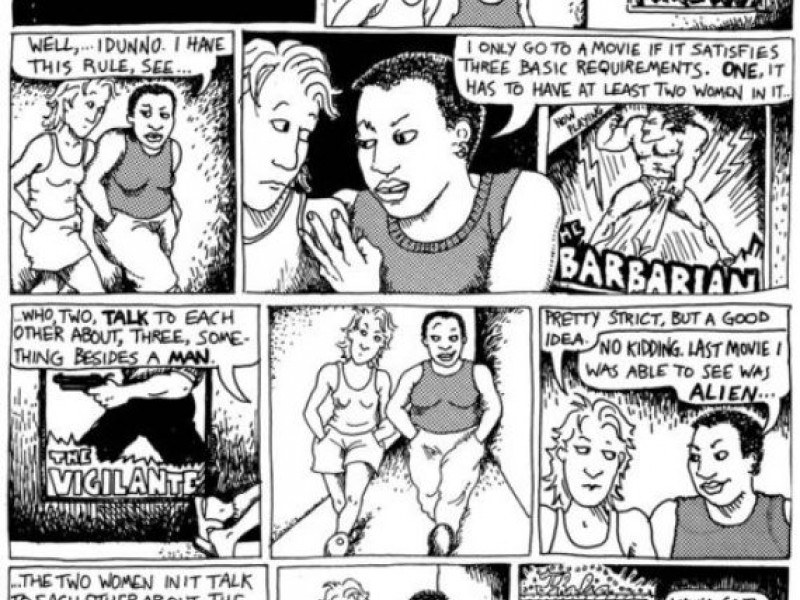
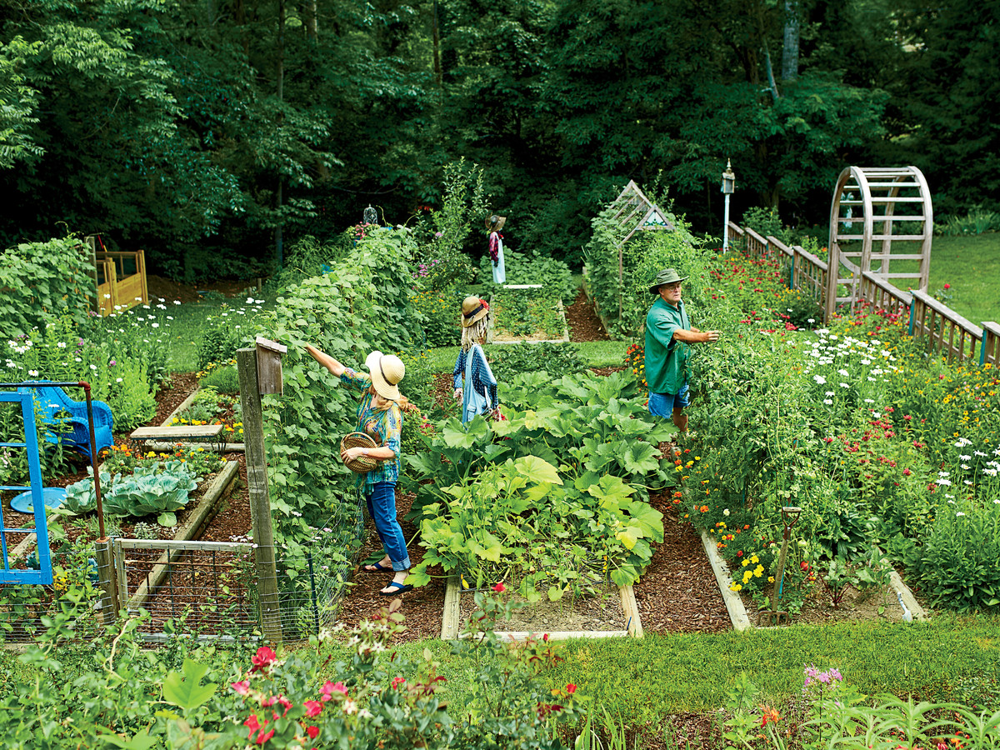

Why I Love Statistics
Why do I love Statistics? I learned over years of trying new fields and disciplines that I stopped seeing my experience in learning facts, here and there, about the anatomy of the cniadaria - the size of the US judicial branch - the last words Helen spoke at the conclusion of Homer's The Illiad, that I just didn't like retaining and regurgitating. Instead, I found that the most exciting thing for me to learn was tools - the tools to learn about the world. That's how I see Statistics. It's a discipline that teaches me how to work with things that I may know nothing about intially - answer questions that may feel like an expert needs to answer.
Statistical testing and modeling is a satisfying, constantly-rewarding (except when the R code won't debug!), and tools-focused discipline that I've grown to love. On this page of my site, I'm sharing some the statistical investigations, data explorations, and ideas I've had over time while working in this field. This is by no means comprehensive , but it shows some of my highlights.
Gender and the Movies
Allison Bechdel's Dykes to Watch Out For
Click Here for the Full Report
Bechdel Test and Modern Cinema
A group project in Econometrics where I analyze a movie data-set filled with an interesting set of explanatory variables such as IMDB rating, genre, and budget to see which variables are significant predictors of the film passing the Bechdel Test. We found some interesting results - IMBD rated movies which failed the Bechdel Test higher, Action films more regularly failed than passed, and
Skills I've Developed
- Familiarity with Linear Probabilty, Probit, and Logit Models for Binary Dependent Variable Regressions
- How to Report Probability Results with Dummy Variables of Multiple Factors
- Practice with Querying API Databases (some variables were taken from Movie API Database)
- Practice with Writing a Formal Report with Abstract, Introduction, Results and Model.
Food Security and Ethnicity
Southern Living
Click Here for the Full Report
Regressional Analysis on Food Justice
My professor offered a data set provided by three combined sources that he himself was working on. In the beginning of Econometrics we were told to do a simple, guided regression assignment using a specified variable and model. I decided on my free time to explore a food insecurity index variable as a independent variable, and run a simple OLS regression on a number of predictor variables - race, population, drought risk, etc.
Skills I've Developed
- Developed "Data Analysis" Intuition: Visualize Data, Fit a Model, Report Results.
- Skills in Chloropleth Package for Spatial Visualizations in R
- Skills in Formally Reporting Regression Results Through Visualization and Summary
- Skills in Seeking Outside Variables (Added Drought Risk) and Incorporating/Merging with Data Cleanly
- Skills in Smoothly Developing Written Report in LaTeX
Monarchs and Milkweeds

My own photo, in my own backyard!
Click Here for the Full Report
Regressional Analysis of Monarch Butterfly Population Decline
I found some interesting data on my hometown. Here, I investigated the trends for each type of crime, and designed a time series analysis graph based on the occurence of crime incidence, using the Highcharter package in R. Lastly, I combined some of the work I've done for my R Programming course in terms of spatially mapping crime based on district location.
Skills I've Developed
- Familiarity with time variables in R with lubridate package
- Time series, reactive visualizations with Highcharter package in R
- Practice with GGmaps
- Familarity with shapefiles and spatially working with them
- Designing functions to mass produce usable plots.
Player Unknown Battleground
Player Unknown Battleground
Click Here for the Full Report
Exploratory Data Analysis on Player Statistics in PUBG
My partner loves playing PUBG. It's a open arena shooter that involves lots of running around, lots of looting, and maybe a kill or two every 30 minutes or so. The game is dramatically boring, but it has moments of high intensity... and what's fascinating is that out of 100 players, only one person survives to the end. I was interested enough to do some R based exploratory data analysis to answer some questions I had.
Skills I've Developed
- The agonies of dealing with a big data-set (nearly 7 million observations)
- Practice in Overlaying Effects onto R Visualizations to Tell a Better Story (Death Count by "Zone Shrink")
- Familarity with Unique GGthemes
- Practice with Visualizing Dense Variables Like 30+ Factor Count
Chicago and Crime
CBS Chicago News
Click Here for the Full Report
Exploratory Data Analysis on Chicago Crime
I found some interesting data on my hometown. Here, I investigated the trends for each type of crime, and designed a time series analysis graph based on the occurence of crime incidence, using the Highcharter package in R. Lastly, I combined some of the work I've done for my R Programming course in terms of spatially mapping crime based on district location.
Skills I've Developed
- Familiarity with time variables in R with lubridate package
- Time series, reactive visualizations with Highcharter package in R
- Practice with GGmaps
- Familarity with shapefiles and spatially working with them
- Designing functions to mass produce usable plots.